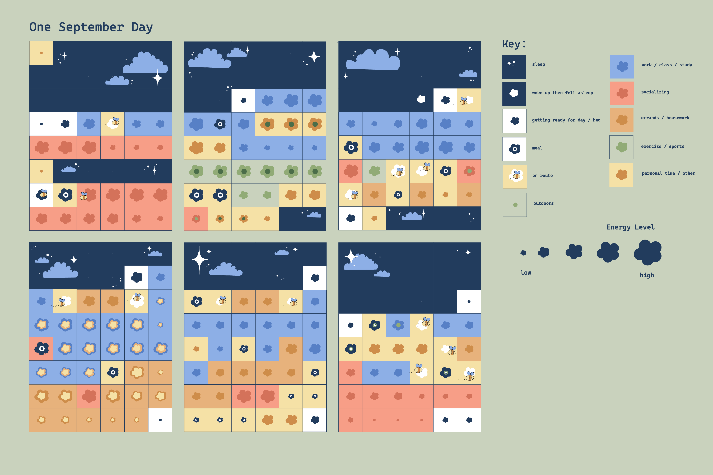
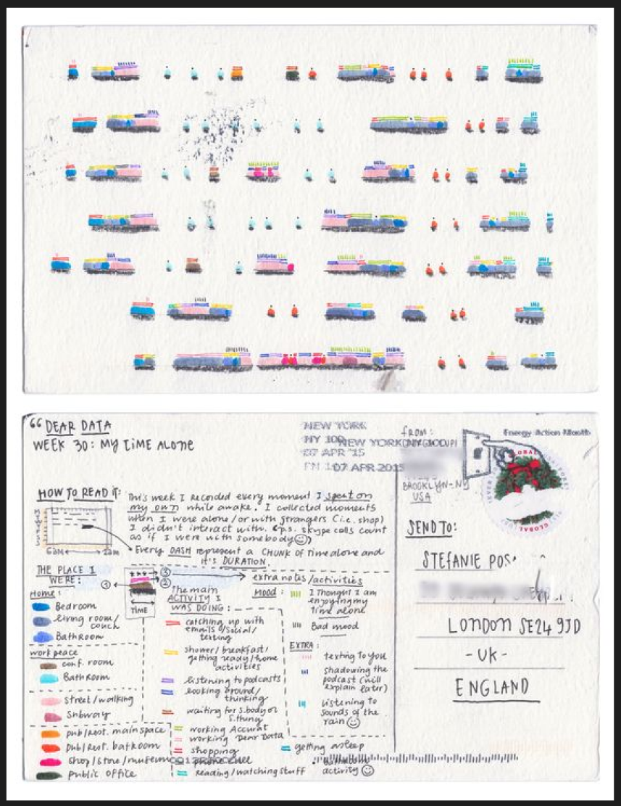
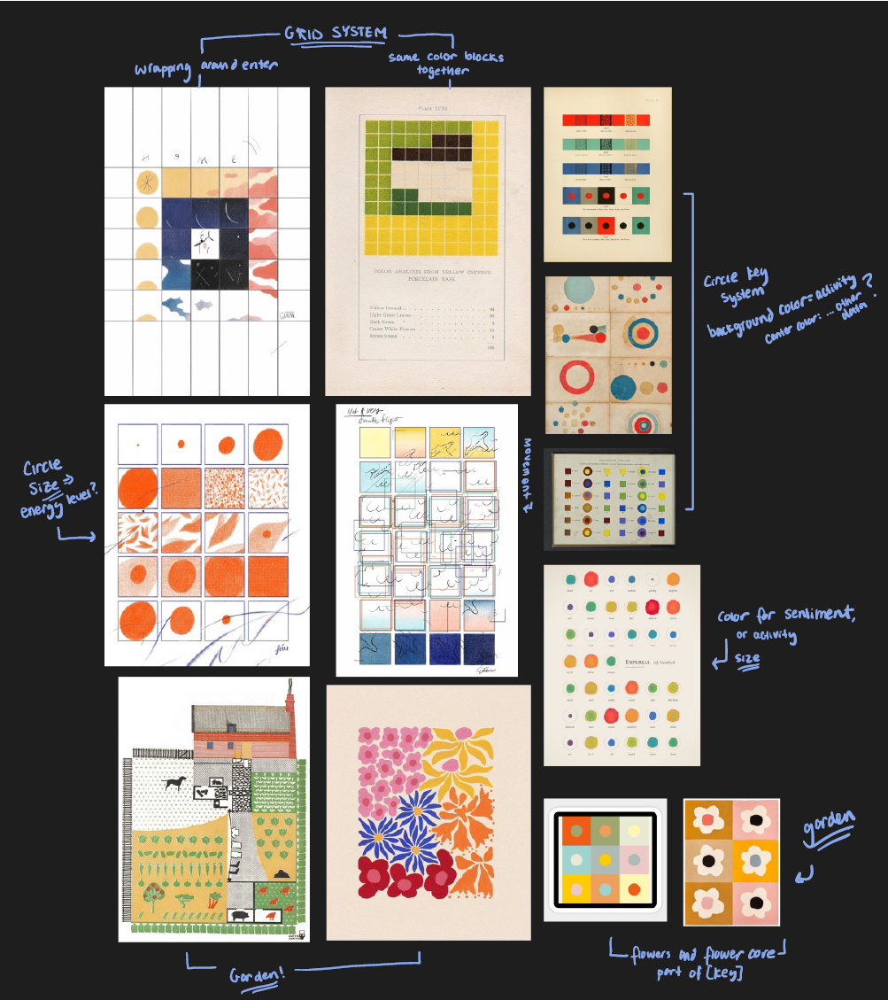
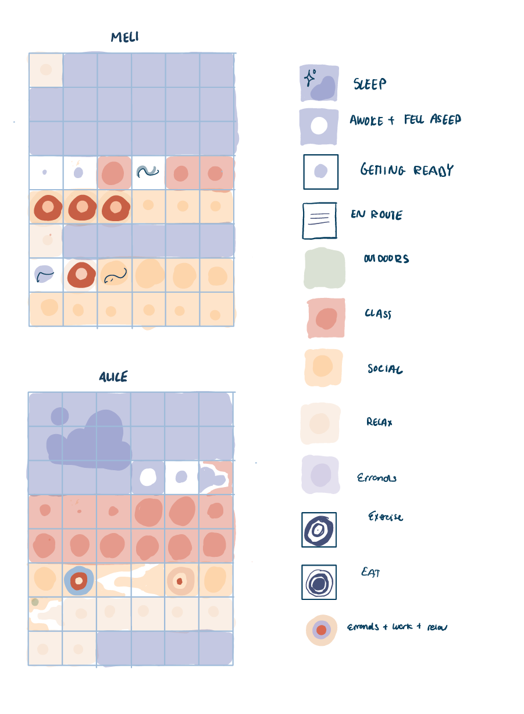
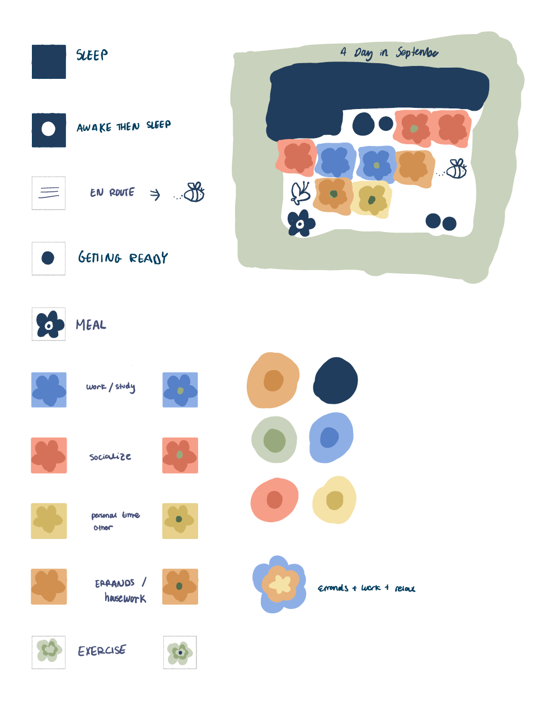
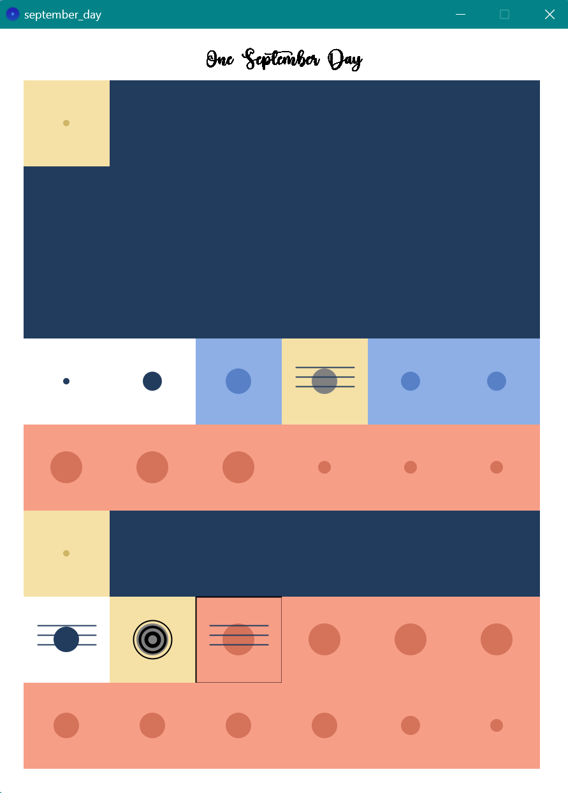

Garden Grid: Creative Data Visualization

Project overview
For the homework topic of data visualization, I was drawn to the idea of visualizing time. While we all share the same daily timeframe, the ways we organize and distribute our time to achieve our goals are infinitely diverse. This project compares the ways individuals can experience the same random day in September, and explores how one can visualize the progression of “the day”.
Inspiration from "Dear Data" project
This visualization was heavily inspired by the analog data drawing project titled "Dear Data". The project follows Giorgia Lupi and Stefanie Posavec, two information designers living on different sides of the Atlantic, as they hand draw their personal data and send it to each other in the form of postcards.
Each week they had a different type of data to visualize - that week's goodbyes, laughter, indecision, observed beauty, etc. I resonated with the idea of using our personal data visualization as a way to connect with ourselves and others at a deeper level, and decided to go along the route of visualizing a 'day in the life' of the people closest and most important to me.

Visual research
Visual Research
The project began with visual research to explore various methods of visualizing time, including linear, circular, and grid-based systems. Ultimately, I decided to represent time using a grid system to allow more flexibility and creativity with the final drawing.

Data collection
To bring this concept to life, I designed an Excel survey and distributed it to six of my closest family members and friends to self-report their activities for the specific September day (Friday, September 22nd, 2023). This data served as the foundation for creating a coded grid system that represents an individual's daily routine.
The columns included:
Data cleaning
Following the collection of survey responses, I cleaned the self-recorded data provided by my family and friends. As I cleaned the data, I also created a key and sketched out what each schedule grid would look like under the system.


Processing & Illustrator
Following the establishment of visualization rules, I wrote code to generate the schedule grid and automatically populate it based on the uploaded CSV file. The output from Processing was exported as an SVG file and further refined in Adobe Illustrator, such as adding hand drawn details.

Iterations & design choices
I initially represented energy levels using circles, but I felt that this approach lacked cohesion in the overall design. I aimed for a visual style that would provide immediate context and a unified look.
To achieve this, I revisited my visual research board and began incorporating floral and garden elements into the design. With this more focused design direction, the icon choices and drawn elements make more sense together in painting an image of a garden. The circles became flowers, horizontal lines became a cute bee, the different grid colors are flower patches, and the sparkling night sky acts as a frame for balance.
Designs for the Key:
Final design
For the final design, I displayed the personal garden grids of my six participants side-by-side on a poster. On the right hand side there is a key to read the individual versions of this random September day.